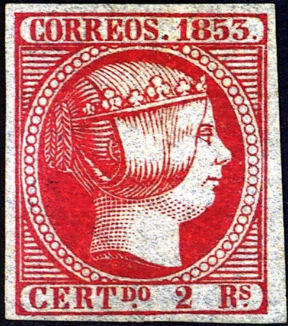
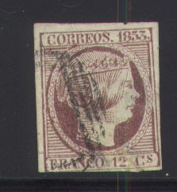
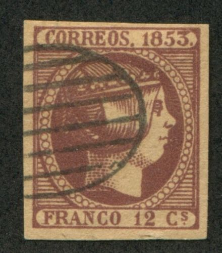

(Genuine stamps)
Return To Catalogue - Queen Isabella, 1852-1853 - Spain overview
Note: on my website many of the
pictures can not be seen! They are of course present in the
catalogue;
contact me if you want to purchase it.
Genuine stamps:

(Genuine stamps)
Forgeries, examples (all Segui forgeries? Usually uncancelled):


(Segui forgeries)
The following stamp are probably Spiro forgeries (note the strange cancel), there are parts of pearls at the bottom of the oval:



Furthermore the pearls are very irregular. This forgery is also described in Album Weeds. A similar forgery seems to exist for the values 6 Cs, 5 Rs and 6 Rs (Spiro forgeries?).
Another forgery with this very peculiar cancel (also note the strange '3'):


(Left image obtained from Bill Claghorn's forgery site)

Three uncancelled forgeries, apparently made by the same forger
In the next forgeries, the pearls and letters of the inscription are very irregular:
Some other forgeries:


A vertical pair of 2 Rs forgeries

The top of the "3" in this forgery is too long.
The next stamps are Sperati forgeries, Sperati sometimes used genuine cancels (by erasing the value of a cheaper stamp), but more often, the cancels are also forged in the Sperati forgeries. Sperati forgeries are quite rare and valuable.

The bottom right hand corner is badly executed in this Sperati
forgery of the 12 cs value.


Sperati forgeries of the 2 rs value; The frame has an extension
towards the left in the upper left corner. The bottom of the 'T'
of 'CERT' is defective. The top of the '2' is sometimes
defective.


Sperati forgeries of the 5 rs and 6 rs values. There is a break
just above the 'O' of 'DO' (not always present). The Sperati
forgeries of the 5 rs and 6 rs value are similar (Sperati only
changed the numeral and the color). The lower right hand side of
the '3' of '1853' has a white dot. The lower frameline is weak
below the value.
The forger Peter Winter also made forgeries (somewhere in the 1980's on modern white paper) of the variety 'no dot below 'Rs' in the values 2 r, 5 r and 6 r:


Peter Winter forgeries

Forgery of the 6 Cs stamp with a totally differently shaped head
of the Queen.

Another very primitive 2 Rs forgery.


Fournier forgeries, taken from a Fournier Album. These forgeries
are rather deceptive, but the shading of the hair is slightly
different from the genuine stamps according to the Serrane Guide


{kind=link}
{kind=link}
{kind=link}